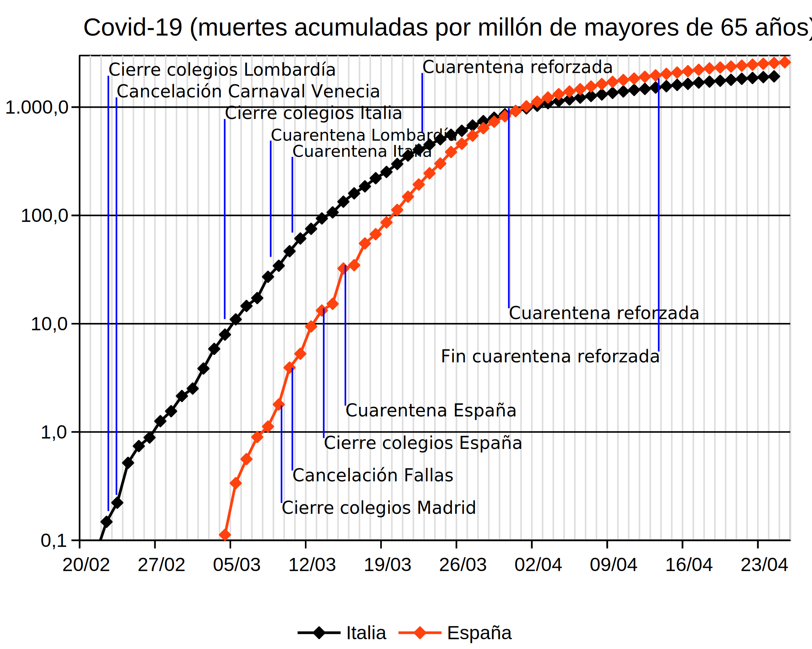
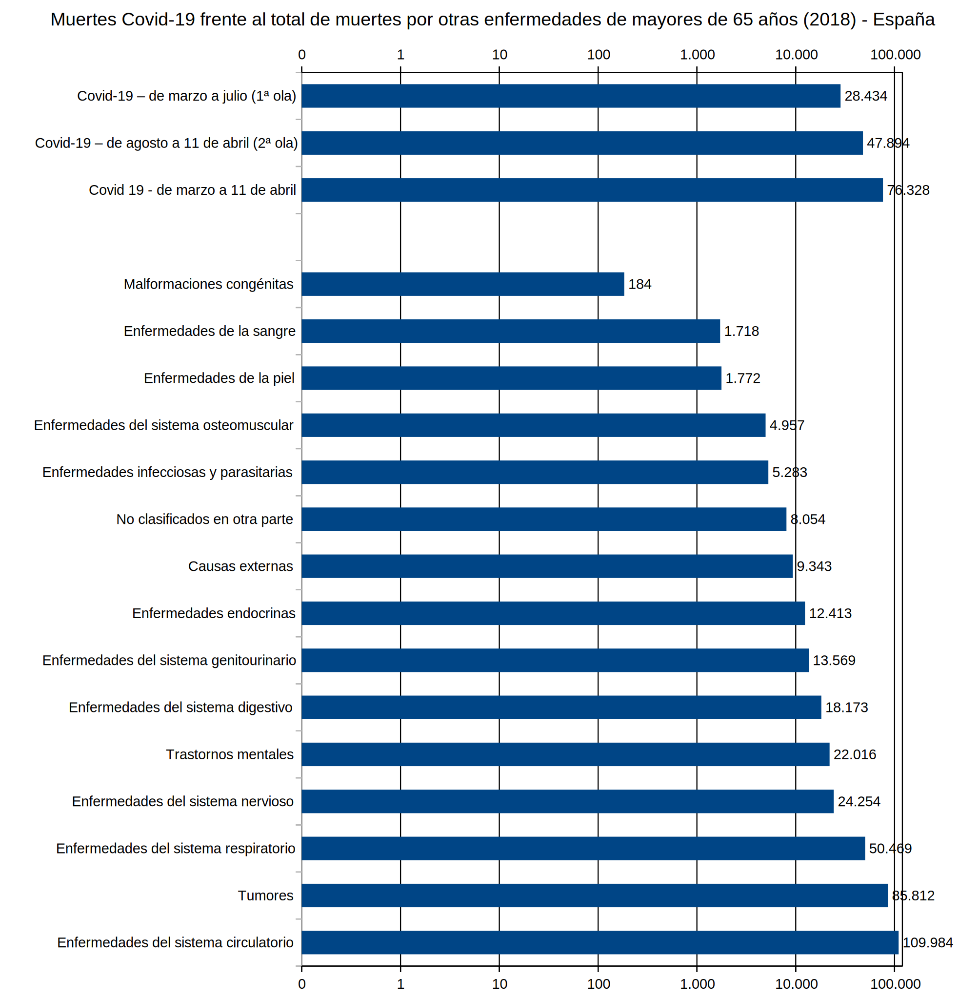
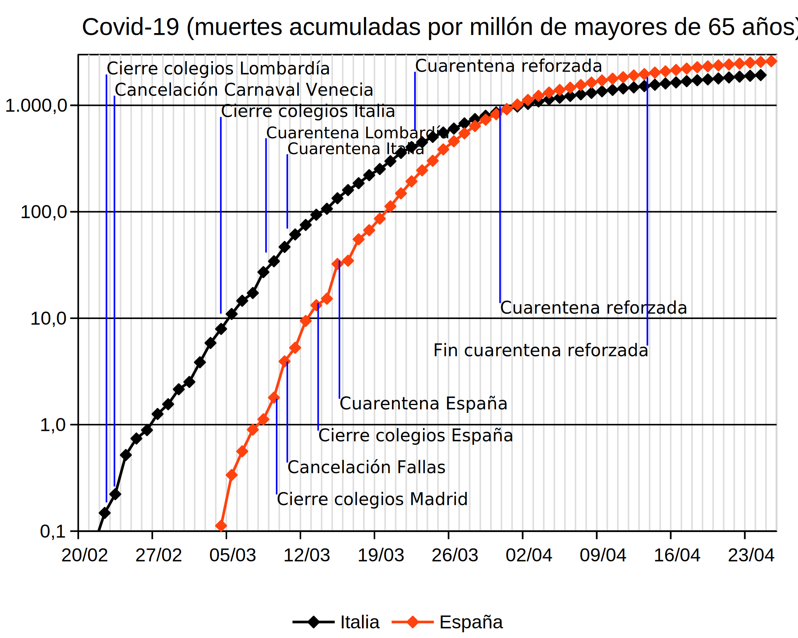
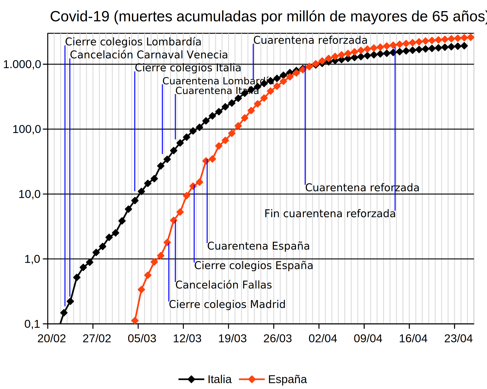

Esta página contiene gráficas que corresponden a la primera ola de la epidemia de Covid-19, ocurrida de marzo a julio/agosto de 2020. Antes de leer esta página, lea la página La evolución del coronavirus Covid-19.
En el caso de España, las gráficas abarcan de marzo a julio, ya que en julio la epidemia prácticamente había desaparecido (según las estadísticas oficiales). En el caso de Europa Occidental, las gráficas abarcan de marzo a agosto, ya que hasta agosto algunos países corrigieron sus cifras de muertos en la primera ola.
La primera ola. Comparación entre Comunidades Autónomas (datos NO ajustados a la población)
Las gráficas siguientes muestran la evolución de muertes por Covid-19, diarias y acumuladas, en las Comunidades Autónomas españolas de marzo a julio de 2020, divididos en tres grupos de acuerdo con la gravedad de la epidemia.
La gráfica siguiente muestra en porcentaje el número total de muertes declaradas por Covid-19 en las comunidades autónomas:
La primera ola. Comparación entre Comunidades Autónomas (datos ajustados a la población)
Las gráficas siguientes muestran la evolución de muertes por Covid-19, diarias y acumuladas, en las Comunidades Autónomas españolas de marzo a julio de 2020, por millón de habitantes mayores de 65 años, de manera que se pueda comparar la gravedad de la epidemia independientemente del tamaño de la Comunidad Autónoma. Las Comunidades Autónomas se han dividido en tres grupos de acuerdo con la gravedad de la epidemia.
La primera ola. Comparación entre países de Europa Occidental (datos NO ajustados a la población)
Las gráficas siguientes muestran la evolución de muertes por Covid-19, diarias y acumuladas, en los países de Europa Occidental de marzo a agosto de 2020, divididos en tres grupos de acuerdo con la gravedad de la epidemia.
La gráfica siguiente muestra en porcentaje el número total de muertes declaradas por Covid-19 en los países de Europa Occidental:
La primera ola. Comparación entre países de Europa Occidental (datos ajustados a la población)
Las gráficas siguientes muestran la evolución de muertes por Covid-19, diarias y acumuladas, en los países de Europa Occidental de marzo a agosto de 2020, por millón de habitantes mayores de 65 años, de manera que se pueda comparar la gravedad de la epidemia independientemente del tamaño del país. Los países se han dividido en tres grupos de acuerdo con la gravedad de la epidemia.
Medidas tomadas en Italia y España
Las autoridades sanitarias están difundiendo desde hace semanas las medidas sanitarias básicas que todos debemos seguir ante la evolución de la enfermedad. Pero también han tomado medidas importantes de aislamiento y control de movimientos de la población que han alterado nuestra vida diaria de forma radical. Esperemos que sean necesarias durante la menor cantidad de tiempo.
La gráfica siguiente muestra las principales medidas en Italia y en España, indicadas sobre el gráfico de muertes por Covid-19 por cada millón de habitantes mayor de 65 años ya comentado anteriormente.

Como curiosidad, se ofrecen las evaluaciones de riesgo publicadas en los meses de enero y febrero de 2020 en los boletines informativos del Ministerio de Sanidad (cita literal):
Actualización nº 1, 15/01/2020:
La transmisión persona a persona no se ha documentado de momento, por lo que el impacto para la salud pública en caso de introducirse el virus en nuestro país, sería muy bajo.
Actualización nº 5, 21/01/2020:
El impacto para la salud pública, en caso de detectar un caso importado en nuestro país se considera muy bajo dado que, de ocurrir transmisión persona a persona del virus, ésta es limitada y se asocia a un contacto estrecho.
Actualización nº 12, 30/01/2020:
El impacto para la salud pública, en caso de detectar un caso importado en nuestro país se considera limitado.
Actualización nº 13, 31/01/2020:
El riesgo global para la salud pública en España, en caso de detectar un caso importado en nuestro país se considera moderado. Nota: Ese mismo día se hizo público que se había detectado el primer caso en España.
Actualización nº 15, 04/02/2020:
Esta evaluación de riesgo se revisa constantemente de acuerdo con la información disponible. Nota: Se añade esta nota al final de la evaluación de riesgo.
Actualización nº 32, 27/02/2020:
El riesgo global para la salud pública en España en nuestro país se considera moderado. Nota: Entre el 11/02/2020 y el 26/02/2020, los boletines del Ministerio de Sanidad dejan de incluir explícitamente la evaluación de riesgo y enlazan a otro documento, del que solo parece estar accesible la versión del 24/02/2020, que incluye la frase anterior. A partir del 28/02/2020, los boletines dejan de hacer referencia a ninguna evaluación de riesgo. Es posible que se publiquen en algún sitio que desconozco.
Comparación con otras enfermedades
El Covid-19 es un desafío tremendo a nuestros sistemas de salud. En este apartado se pretende comparar el número de muertes por Covid-19 con los muertos producidos por otras enfermedades.
La gráfica siguiente muestra el número de muertes por Covid-19 en España en diferentes fechas, comparándolo con el total de muertes de mayores de 65 años ocurridas en 2018 (último año para el que en INE ofrece datos). Las enfermedades están agrupadas por categorías.
Para mostrar la evolución del Covid-19, se muestra el número de muertes por Covid-19 en diferentes fechas (lunes posteriores al 1 de marzo y el último día para los que se dispone de datos oficiales). En este caso la escala horizontal es logarítmica. De esta manera se pueden representar tanto números grandes como números pequeños.

Notas
A finales de marzo de 2020, el País publicó dos artículos muy interesantes en los que se exponían razones fundadas para sospechar que el número oficial de muertes era inferior al real. Debido a la absurda legislación española que persigue los enlaces a los medios de comunicación, no voy a enlazar los artículos, pero el lector puede buscarlos sin dificultad en cualquier buscador. Los artículos son "El coronavirus causa más muertes de las detectadas", publicado por Oriol Güel el 28 de marzo de 2020 y centrado en la situación española y "Cada país cuenta los muertos a su manera y ninguno lo hace bien", publicado por Elena G. Sevillano el 30 de marzo de 2020, que compara la situación con otros países.
Desde el 2 de abril de 2020 Francia incluye en sus estadísticas oficiales las muertes adicionales por Covid-19 ocurridas en residencias de ancianos e ignoradas hasta ese momento, lo que explica el crecimiento de la cifra de muertos en ese país.
Desde el 8 de abril de 2020 España reconoce que puede haber muertes adicionales por Covid-19 ocurridas en residencias de ancianos e ignoradas hasta ese momento, pero el Ministerio de Sanidad sigue sin publicar cifras oficiales y las cifras publicadas por los medios de comunicación son simplemente aproximativas y no permiten hacer un estudio de su evolución. La única fuente que acabará recogiendo todos los fallecimientos producidos durante la epidemia serán los Registros Civiles, aunque ni siquiera los registros parecen inmunes a las interferencias políticas. El Sistema de Vigilancia de la Mortalidad diaria denominado MoMo recoge esta información de forma preliminar.
Las cifras publicadas por el Ministerio de Sanidad el 17 de abril contienen errores reconocidos por el propio Ministerio. El dato más clamoroso es la cifra total de muertos por Covid 19 en Cataluña, inferior a las de los dos días anteriores. He corregido la cifra de Cataluña de manera que se respete el total de muertos en España en ese día, pero como el Ministerio no corrige los datos, los totales mostrados en esta página no coinciden desde ese día con los del Ministerio.
El 2 de mayo de 2020, Rafael Cascón y otros, de la Universidad Politécnica de Madrid, han publicado un artículo que a partir de los datos de MoMo estima la mortalidad por encima de las 40.000 muertes, frente a las 25.000 oficiales.
El 27 de mayo los registros civiles abrieron las compuertas y comunicaron casi 12000 muertos más de los declarados anteriormente, igualando el exceso de mortalidad detectado por MoMo al indicado por el artículo de Rafael Cascón y otros anteriormente citado. El tiempo dirá si los registros civiles han aflorado realmente toda la mortalidad ocurrida durante la epidemia.
A finales de mayo las cifras oficiales publicadas por el Ministerio han tenido una trayectoria caótica con oscilaciones enormes justificadas por presuntos cambios en los criterios estadísticos, que han acabado reduciendo el número de muertos oficiales lo que aleja cada vez más esa cifra de la realidad.


 
